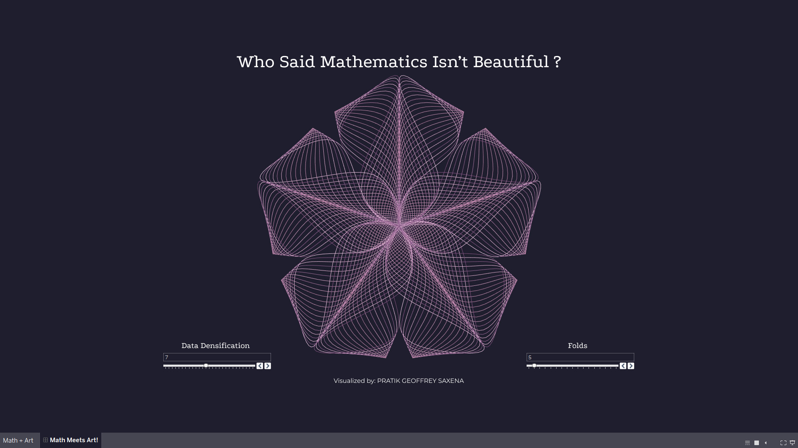
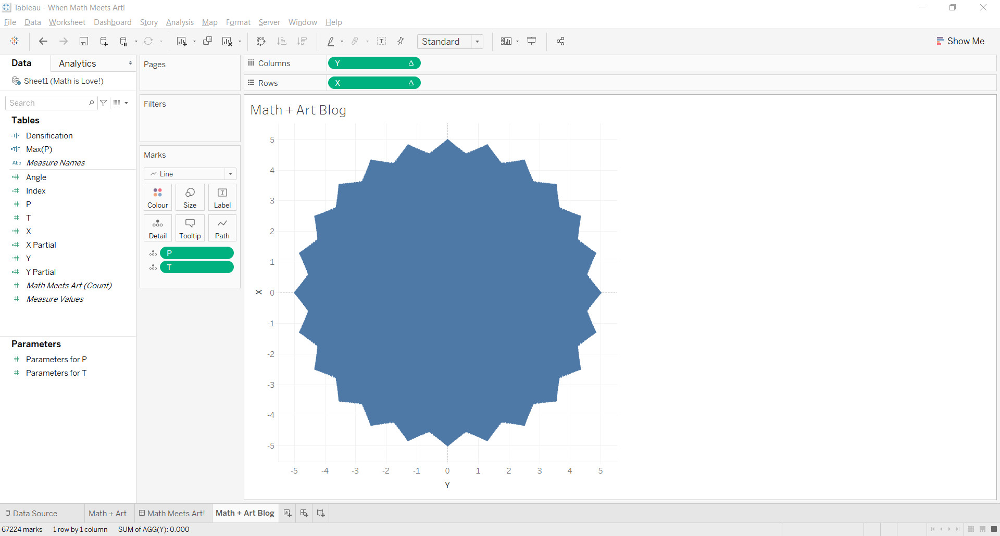
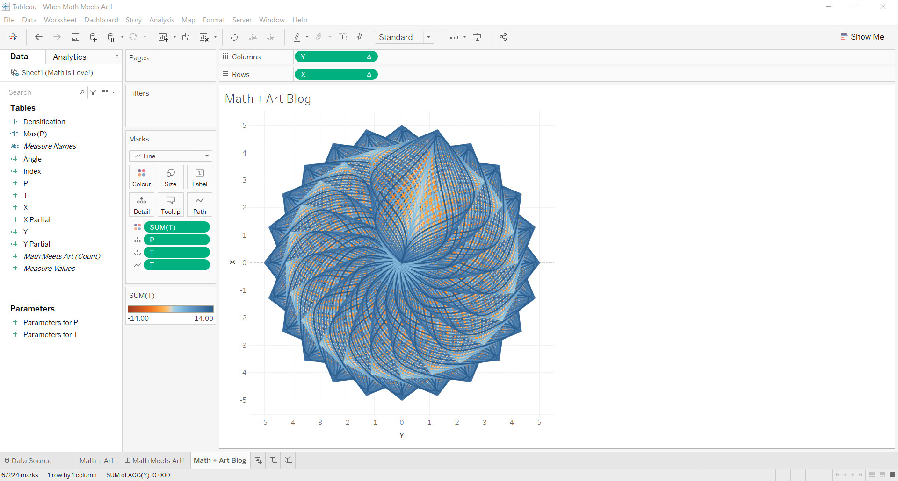
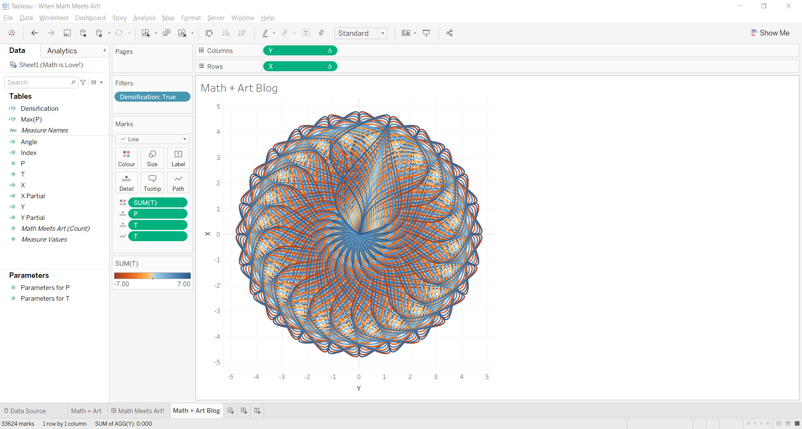
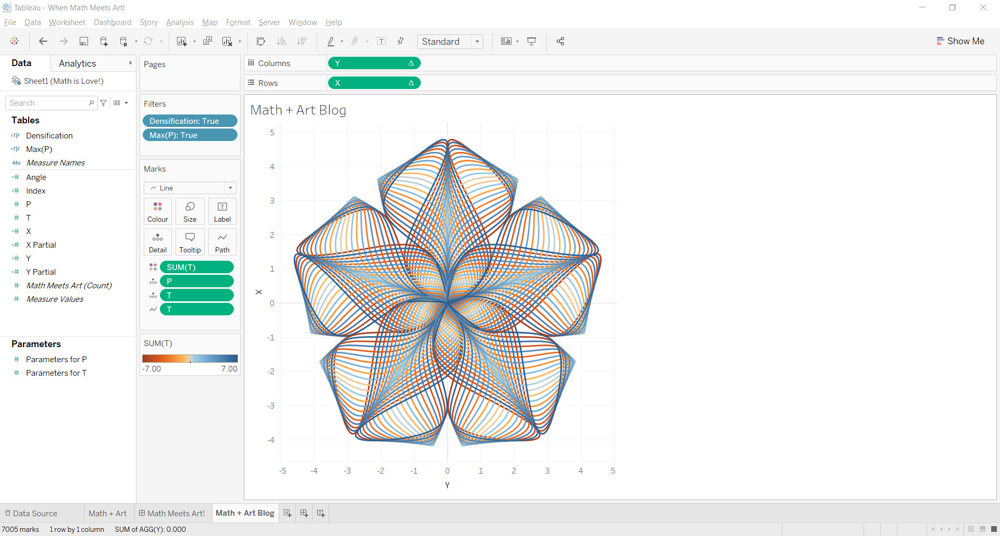

"Mathematics as an expression of the human mind reflects the active will, the contemplative reason, and the desire for aesthetic perfection. Its basic elements are logic and intuition, analysis and construction, generality and individuality." ~ Richard Courant
In mathematics, a parametric equation defines a group of quantities as functions of one or more independent variables called parameters. Parametric equations are commonly used to express the coordinates of the points that make up a geometric object such as a curve or surface, in which case the equations are collectively called a parametric representation or parameterization (alternatively spelled as parametrisation) of the object.
For example, the equations:
x = cos t, y = sin t; form a parametric representation of the unit circle, where t is the parameter:
A point (x, y) is on the unit circle if and only if there is a value of t such that these two equations generate that point.
Sometimes the parametric equations for the individual scalar output variables are combined into a single parametric equation in vectors:
(x, y) = (cos t, sin t)
 Viz by Pratik Geoffrey Saxena on Tableau Public
I'll walk you through my process of making this visualization.
If you want to learn more about parametric equations, and understand it in depth, you should check out The Flerlage Twins they have a wonderful blog.
I learnt the undamentals of parametric equation here, and I'd recommend you to do so too!.
To start off, we need to populate a sheet with values that will be used for data densification.
Namely, P and T such that:
T values range from -6 to +6 in intervals of 1 / no of points you want.
QP values range from 1 to 4.
The more the number of points, the more dense our visualization becomes.
Now we'll create our calculated fields:
X-Partial
2.5 * POWER(SIN(2 * [T]), 2) * POWER(2,COS(COS(1.96 * 3 * [T])))
2.5 * SIN(SIN(2 * [T])) * POWER(COS(1.96 * 3 * [T]), 2)
Angle
360/TOTAL(COUNTD([P]))
[P]
X
(ATTR([X])*COS(RADIANS([Angle]*ATTR([Index]))) - ATTR([Y Partial])*SIN(RADIANS([Angle]*ATTR([Index]))))
(ATTR([Y Partial])*cos(radians([Angle]*ATTR([Index]))) + ATTR([X Partial])*sin(radians([Angle]*ATTR([Index]))))
Now we'll create our parameters:
- Data Type: Integer
- Current Value: 4
- Value when workbook opens: Current Value
- Display format: Automatic
- Allowable Values: Range
- Range of Values - Minimum: 4
- Range of Values - Maximum: 20
- Range of Values - Step Size: 1
Parameters for P
- Data Type: Float
- Current Value: 8
- Value when workbook opens: Current Value
- Display format: Automatic
- Allowable Values: Range
- Range of Values - Minimum: 1
- Range of Values - Maximum: 4
- Range of Values - Step Size: 0.5
Parameters for T
Now we'll create some more calculated fields:
Densification
ABS([T]) < = [Parameters for T]
[P] < = [Parameters for P]
1. Add X and Y to rows and columns respectively, & P and T to detail.

2. Now add T to Path, & SUM(T) to Color.

You still get a pretty cool visualization, but we have one last step to do. To finish it off, add Densification & Max(P) to our filters and set them to True.

Once you're done, it should look like this!

Play around with the colors, and format your dashboard.
Viz through the stages